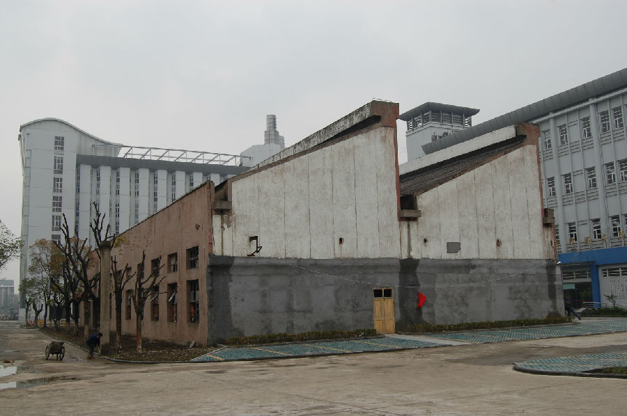

嘉兴市文物保护网 · 市级文物保护点 · 2020-11-09 · 原文

原嘉丝联厂房位于嘉兴市新嘉街道北京路社区东升东路与建国北路交叉口。20世纪60年代建造，坐北朝南，建筑占地面积1300余平方米，东西长51.5米，南北宽25.4米，高13.72米。东、西立面为两个并列相连的梯形，屋顶北面为斜坡，南面为竖直排窗。厂房内设备已拆除，仅余部分通风管道和地面摆放织机的水泥凹槽。丝织业作为嘉兴的一项传统特色产业具有悠久的历史，从传统手工作坊向现代工业化发展过程中，经历了一系列的生产工具和生产方式的变革，原嘉丝联厂房正是这段发展史中的难得实物见证，因而具有较高的历史和科学价值。2009年公布为嘉兴市文物保护点。